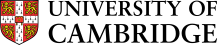
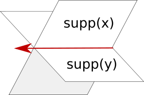

Density Matrices for
Lexical Entailment
21st June, 2016
Zhuoran (Jordan) Zhang, Laura Rimell, and Tamara Polajnar
MPhil in Advanced Computer Science

Hypernymy
Meronymy
Attribute
Causality
An apple is a fruit.
I ate the applefruit.
Distributional Inclusion Hypothesis*
A word \(v\) entails another word \(w\) iff all of the characteristic features of \(v\) are expected to appear with \(w\).
Density Matrices
My pet fish is a goldfish. \(\rightarrow\begin{bmatrix}1\\1\\0\end{bmatrix}\cdot\begin{bmatrix}1&1&0\end{bmatrix}=\begin{bmatrix}1&1&0\\1&1&0\\0&0&0\end{bmatrix}\)
\(\rho_{goldfish} = \begin{bmatrix}1&1&0\\1&1&0\\0&0&1\end{bmatrix}\)
\(\rho_{cat} = \begin{bmatrix}1&0&0\\0&1&0\\0&0&0\end{bmatrix}\)
Target Word: apple
Eigenvalue #1: 0.049
ii used use big introduced ibm cultivar microsoft discord apple
Eigenvalue #6: 0.018
trees pear cherry tree peach plum orchard orchards apricot oak
Eigenvalue #8: 0.017
macintosh products logo trees orange peach pear cherry apple microsoft
Representativeness
$$R(\rho_{x}||\rho_{y}) = \frac{1}{1+S(\rho_{x}||\rho_{y})}$$
$$S(\rho_{x}||\rho_{y}) = \tr{\rho_{x}\log\rho_{x}} - \tr{\rho_{x}\log\rho_{y}}$$
Results
Hypernymy Direction
\(alligator\xrightarrow{?}reptile\)
\(dishwasher\xrightarrow{?}appliance\)
57.2% Accuracy
Data Set: Baroni and Lenci Evaluation of Semantic Spaces (BLESS)
Hypernymy Precision
Random Hypernyms
\(alligator\xrightarrow{?}rectifier\)
61.9% Precision
Shuffled Hypernyms
\(alligator\xrightarrow{?}appliance\)
\(dishwasher\xrightarrow{?}reptile\)
61.7% Precision
Other Measures
\(WeedsPrec(x,y) = \frac{\sum\limits_{c\in F(x)\cap F(y)}w(c,x)}{\sum\limits_{c\in F(x)}w(c,x)}\)
\(WeedsPrec_{quantum}(x,y)\)
\(= \sum_{i\in I_{y,+}}\bra{y_{i}}\rho_{x}\ket{y_{i}}\)
